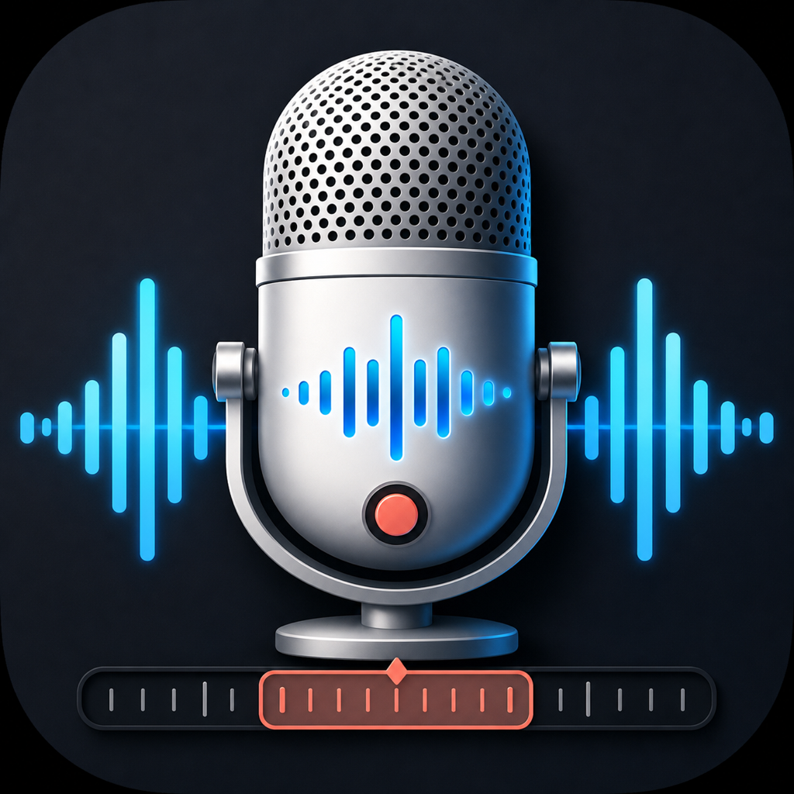

录音转写编辑器
录音转写编辑器
錄音轉寫編輯器
Audio Transcription Editor
Audio Transcription Editor
Audio Transcription Editor
Audio Transcription Editor
録音文字起こしエディタ
녹음 전사 편집기
Audio-Transkriptionseditor
Éditeur transcription audio
Editor de transcripción audio
Editor de transcripción audio
Editor de transcrição áudio
Редактор транскрипции аудио
Editor trascrizione audio
Audio Transcriptie Editor
Ses Transkripsiyon Editörü
:
Apple Standard EULA
Email:
s632533290@gmail.com
小红书：楚游尘
少数派：楚游尘